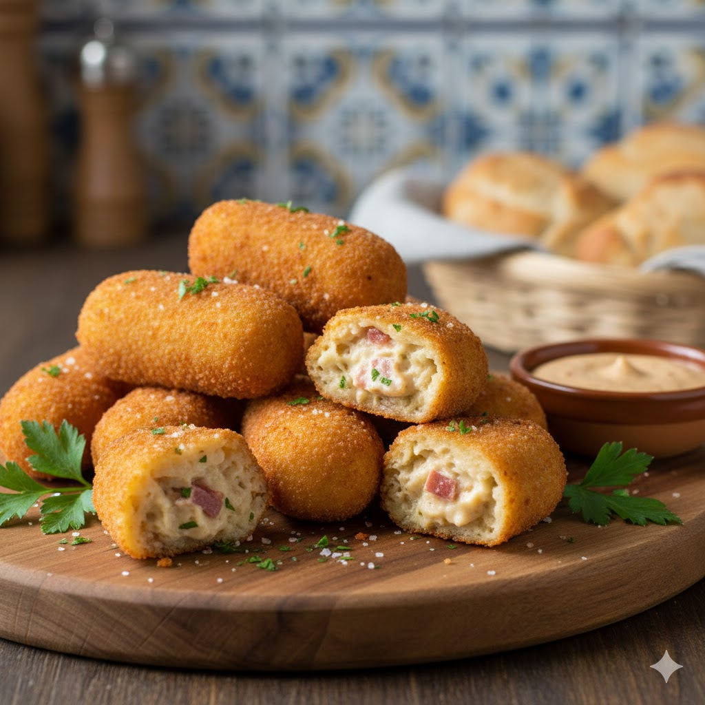
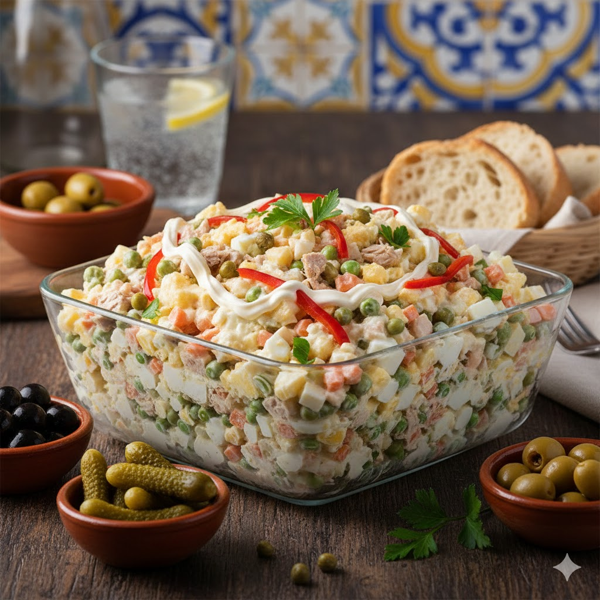
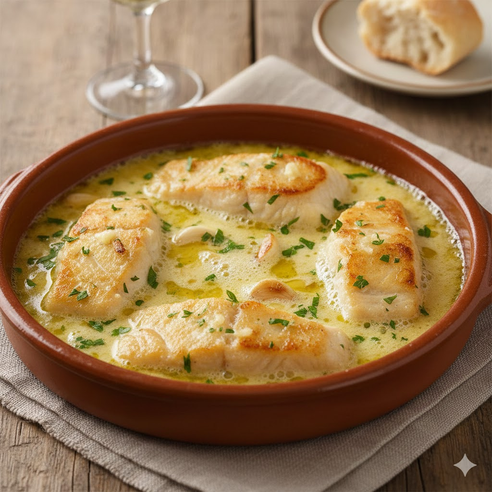
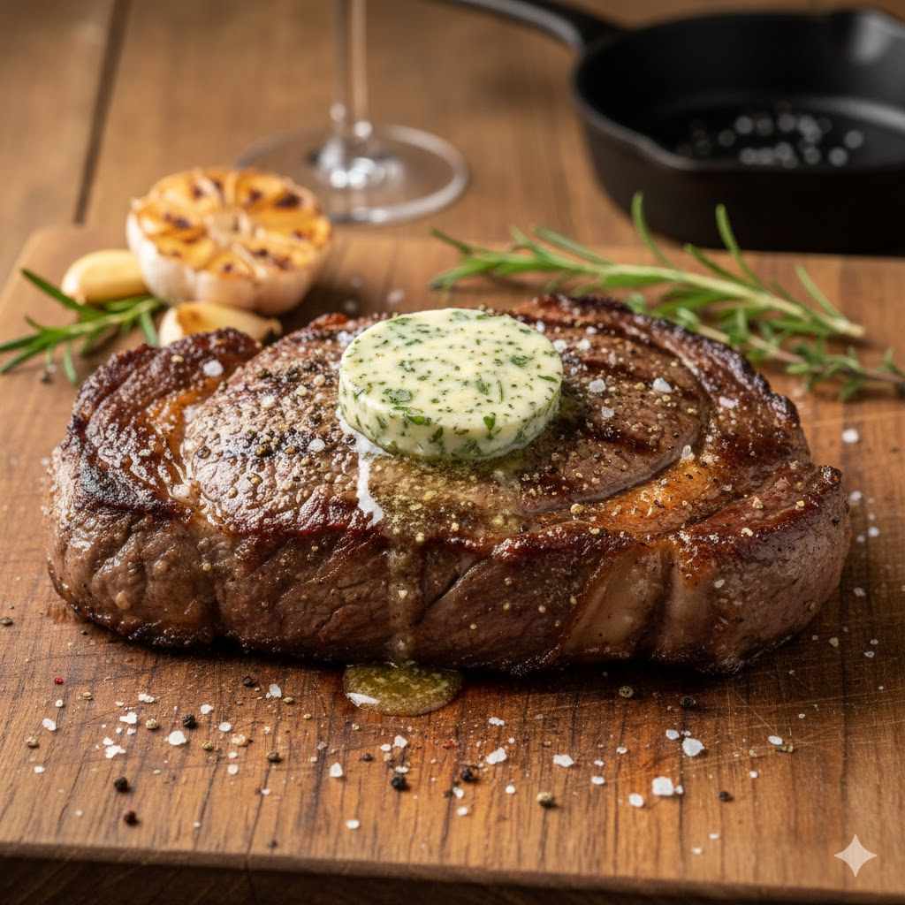
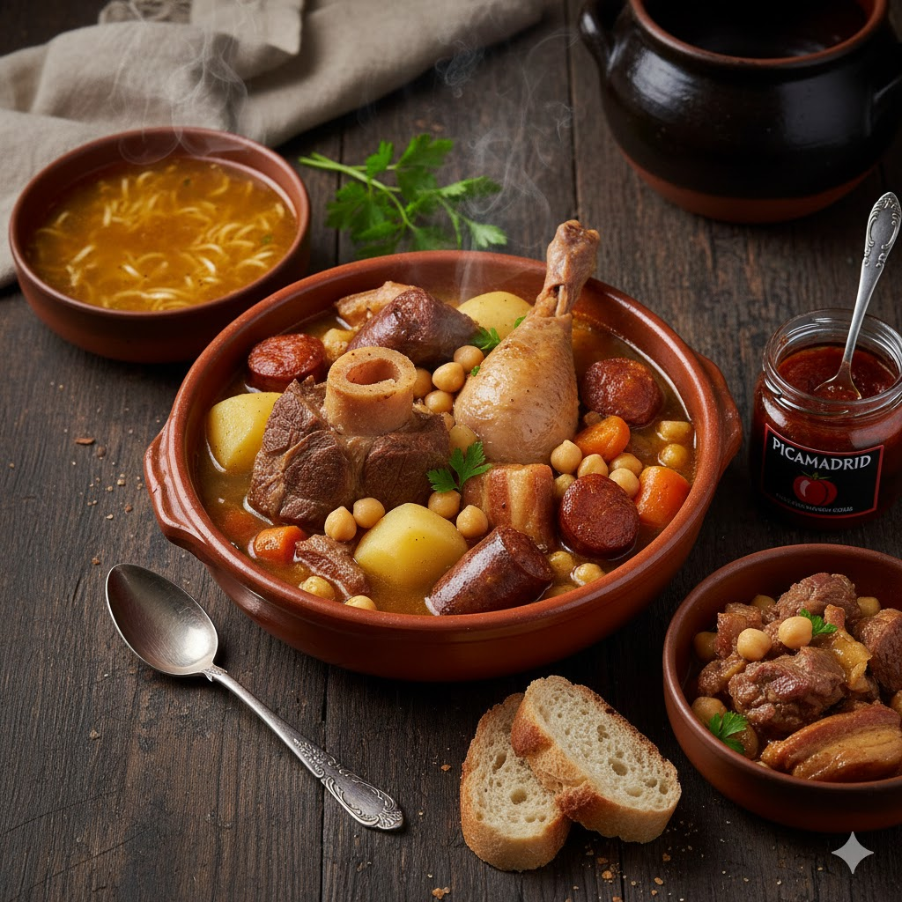
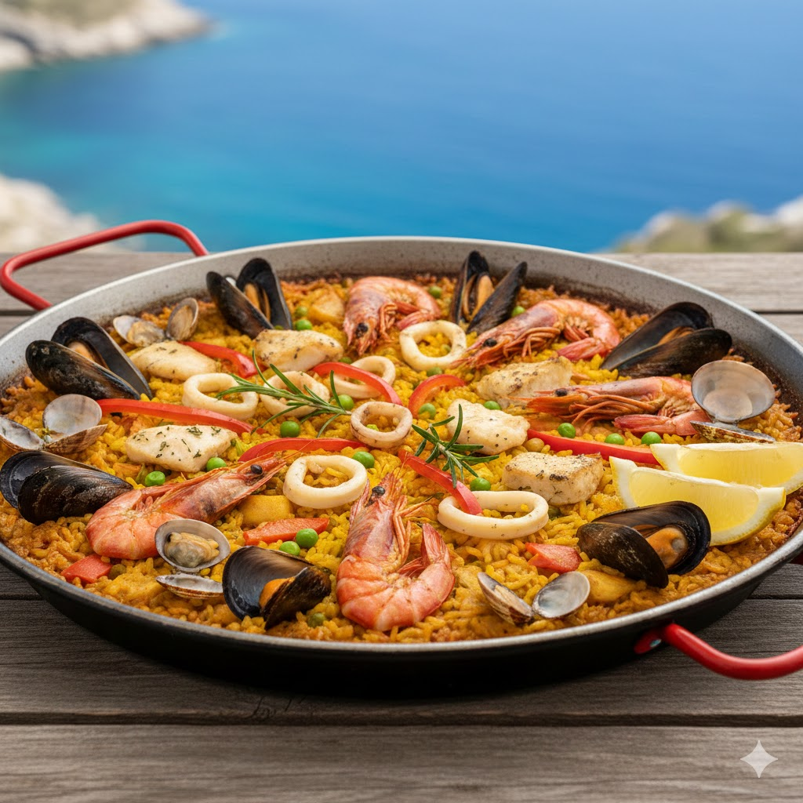
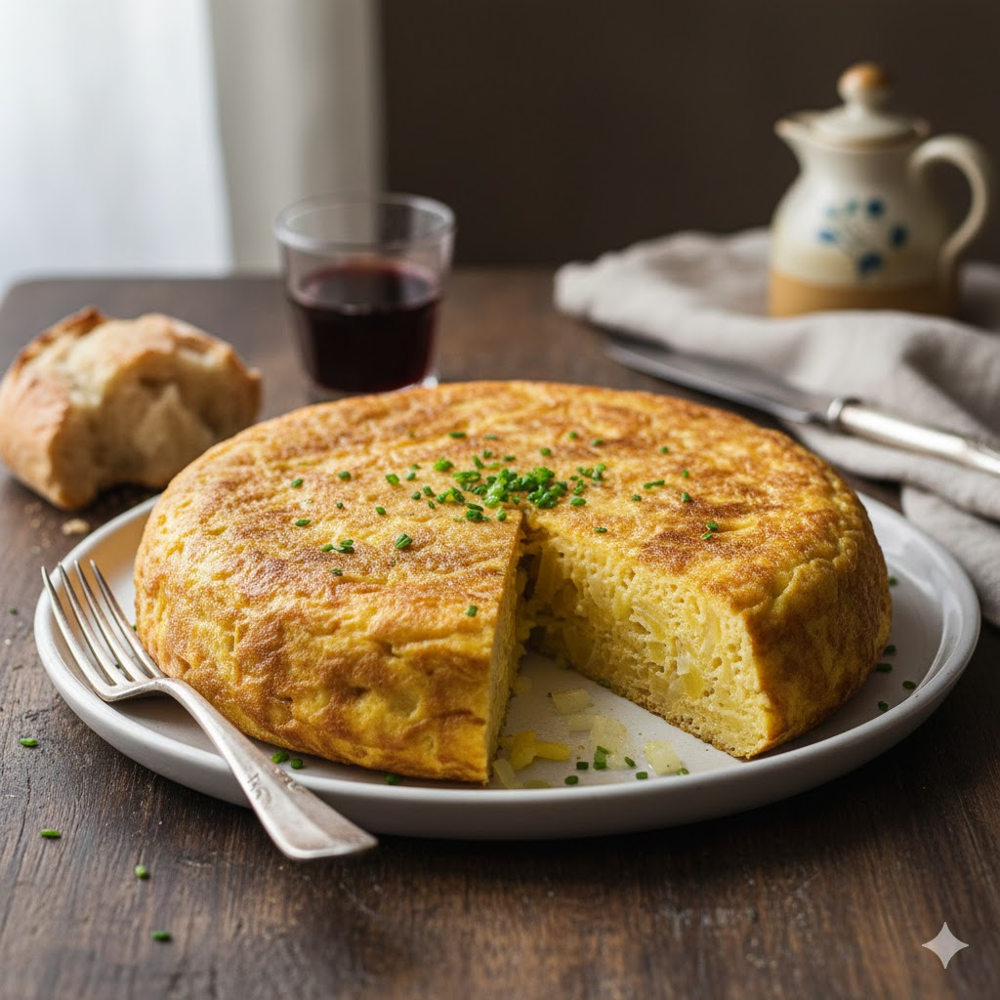
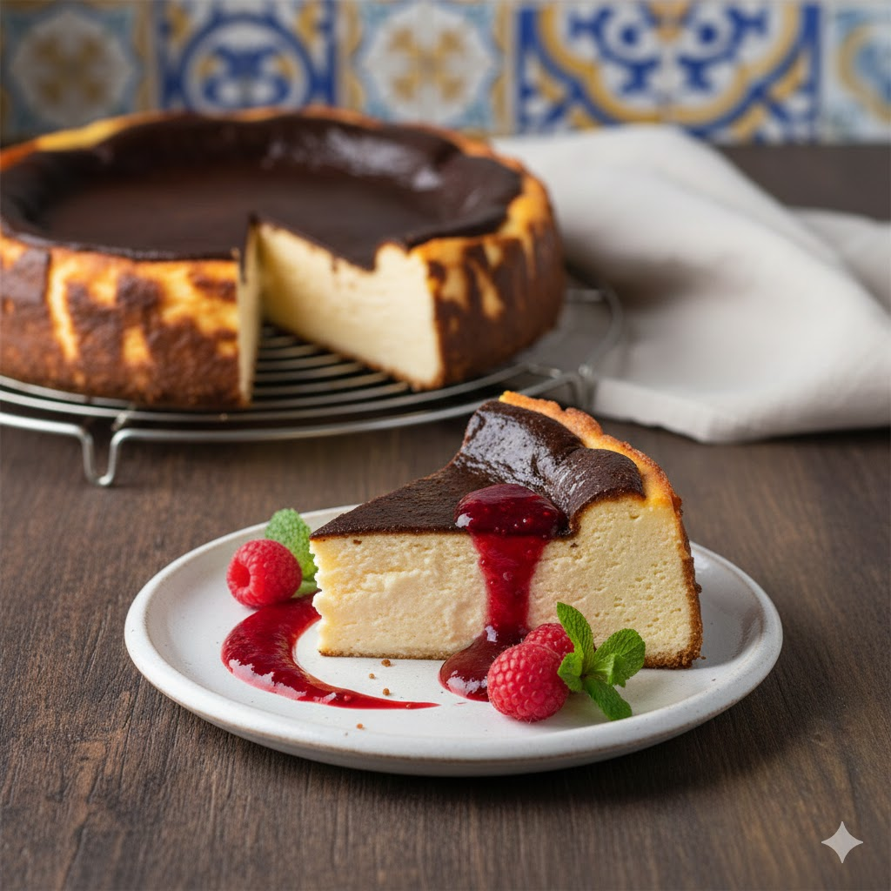
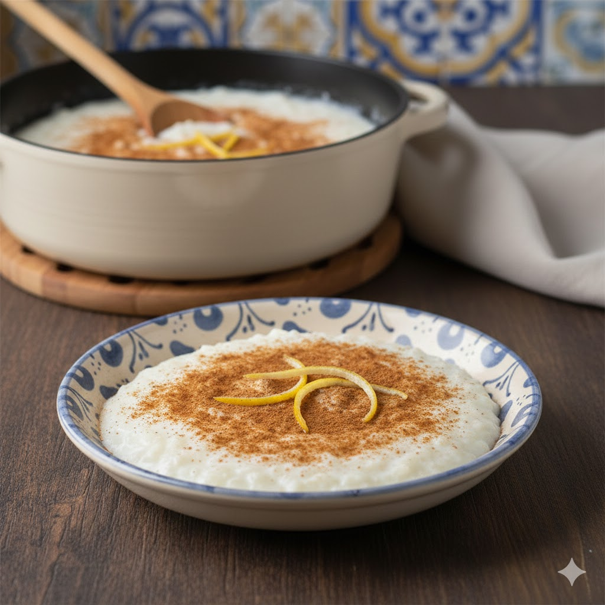

Croquetas de Jamón Iberico
Crujientes por fuera y con una bechamel cremosa que se deshace en la boca.

Crujientes por fuera y con una bechamel cremosa que se deshace en la boca.

La receta de la casa con ventresca de atún y picos artesanos.

Receta tradicional con aceite de oliva virgen y ajos dorados.

300g de carne de la sierra, madurada 30 días, con patatas panaderas.

Un reconfortante plato de garbanzos de calidad, carnes selectas y una sopa cocinada a fuego lento durante horas.

El auténtico sabor del Mediterráneo en un arroz meloso, coronado con los mejores frutos del mar frescos.

El icono de nuestra gastronomía: patata pochada lentamente y huevo campero para lograr una textura melosa.

Horneada cada mañana, con una base de galleta artesana y corazón cremoso.

Cocinado a fuego lento durante 3 horas y caramelizado con soplete al momento.